C++ "链链"不忘@必有回响之单链表
1. 前言
数组和链表是数据结构的基石，是逻辑上可描述、物理结构真实存在的具体数据结构。其它的数据结构往往在此基础上赋予不同的数据操作语义，如栈先进后出，队列先进先出……
数组中的所有数据存储在一片连续的内存区域；链表的数据以结点形式存储，结点分散在内存的不同位置，结点之间通过保存彼此的地址从而知道对方的存在。
因数组物理结构的连续特性，其查询速度较快。但因数组的空间大小是固定的，在添加、插入数据时，可能需要对空间进行扩容操作，删除时，需要对数据进行移位操作，其性能较差。
链表中的结点通过地址彼此联系，查询有点繁琐，查询过程有点像古时候通过烽火传递军情一样。而插入、删除操作则较快，只需要改变结点之间的地址信息就可以。
可认为链表是由结点组成的集合实体，根据结点中存储信息的不同，可把链表分成：
- 单链表：结点中存储数据和其后驱结点的地址。
- 循环链表：在单链表的基础上，其最后一个结点，也称尾结点中存储头结点的地址，形成一个闭环。
- 双向链表：结点中存储数据和前、后驱结点的地址。
- 双向循环链表：在双向链表的基础上，头结点保存尾结点地址，尾结点保存头结点地址。一般说双向链表都是指双向循环链表。
在链表的基本形式之上，可以根据需要在结点上添加更多信息，如十字链表等复杂形式。在链表基础认知之上，请不要拘泥于知识本身，而要善于根据实际需要进行变通。
本文聊聊基于单链表形式的数据查询、插入、删除操作。
2. 单链表
单链表的特点是结点中仅存储数据本身以及后驱结点的地址，所以单链表的结点只有 2 个域：
- 存放数据信息，称为数据域。
- 存放后驱结点的地址信息，称为指针域。
如下图描述了单链表结点的存储结构：
C++中可以使用结构体描述结点：
typedef int dataType;
//结点
struct LinkNode{
//数据成员
dataType data;
//后驱结点的地址
LinkNode *next;
//构造函数
LinkNode(dataType data) {
this->data=data;
this->next=NULL;
}
};
当结点与结点之间手牵手后，就构成了链表：
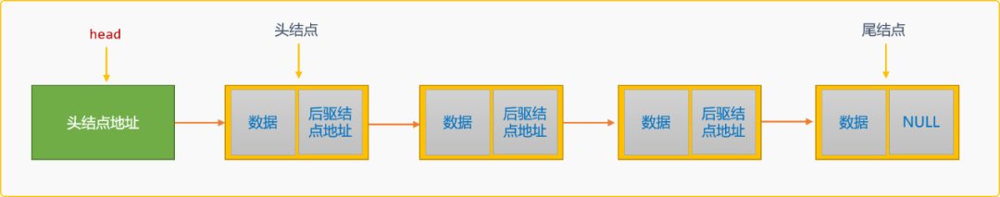
链表有 2 个特殊结点：
- 头结点：链表的第一个结点，头结点没有前驱结点。头结点可以存储数据，也可以不存储数据，不存储时，此结点为标识用的空白结点，可在链表操作时提供便利。关于第一结点的问题在后文会详细介绍。
- 尾结点：链表中的最后一个结点，在单链表中其后驱结点的地址为
NULL，也就是没有后驱结点。
链表需要一个LinkNode类型的变量（head）用来存储头结点地址，对于整个链表的操作往往都是从head保存的头结点开始。
链表还应该提供维护整个结点链路的基本操作算法（抽象数据结构）：
/*
* 链表类
*/
class LinkList {
private:
//头指针
LinkNode *head;
//链表的长度
int length;
public:
//构造函数
LinkList() {}
//返回头指针
LinkNode * getHead() {
return this->head;
}
//初始化链表
void initLinkList() {}
//按位置查询结点
LinkNode * findNodeByIndex(int index) {}
//从头创建链表
void createFromHead(int n) {}
//从尾建链表
void createFromTail(int n) {}
//按值查询结点
LinkNode * findNodeByVal(dataType val) {}
//后插入
int instertAfter(dataType val,dataType data) {}
//前插入
int insertBefore(dataType val,dataType data) {}
//按位置删除结点
int delNode(dataType data) {}
//删除所有结点
void delAll() {}
//显示所有
void showSelf() {}
//析构函数
~LinkList() {
this->delAll();
}
};
2.1 初始化
链表由多个结点组成，因头结点没有前驱结点，所以需要一个变量存储其地址，此变量称为链表的head首地址。后续操作基本都是顺着首地址"顺滕摸瓜"。
当head为NULL时，说明此链表为空链表。一般会在初始化时，为head变量存储一个没有实际数据语义的标志性结点，也称为空白头结点。
所以初始化时，会有 2 种方案：
- 设置
head为NULL。建立一个空链表。
- 设置
head指向一个没有实际数据语义的空白结点，此结点仅起到标志作用。
是否一定要提供一个标志性的空白头结点，这不是必须的，但是有了这个空白头结点后，会为链表的操作带来诸多的便利性。一般在描述链表时，都会提供空白头结点。
2.2 创建单链表
创建单链表有 2 种方案：
- 创建过程中，新结点替换原来的头结点，成为新的头结点，也称为头部插入创建方案。如构建数据为
{4,9,12,7}的单链表。
头部插入创建单链表后，数据在链表中的存储顺序和数据的逻辑顺序是相反的。如上图所示。
注：上述插入演示没有带空白结点。
代码实现：
//头部插入创建链表
void createFromHead(int n) {
LinkNode *newNode,*p;
p=this->head;
for(int i=0; i<n; i++) {
newNode=new LinkNode();
//输入数据
cin>>newNode->data;
//原头结点为新结点的后驱结点
newNode->next=p;
//新结点成为新的头结点
p=newNode;
}
}
添加 3 个结点，测试上述创建的正确性。
LinkList list;
list.createFromHead(3);
LinkNode * head= list.getHead();
cout<<"输出结点信息"<<endl;
//显示第一个结点
cout<<head->data<<endl;
//显示第二个结点
cout<<head->next->data<<endl;
//显示第三个结点
cout<<head->next->next->data<<endl;
执行结果：
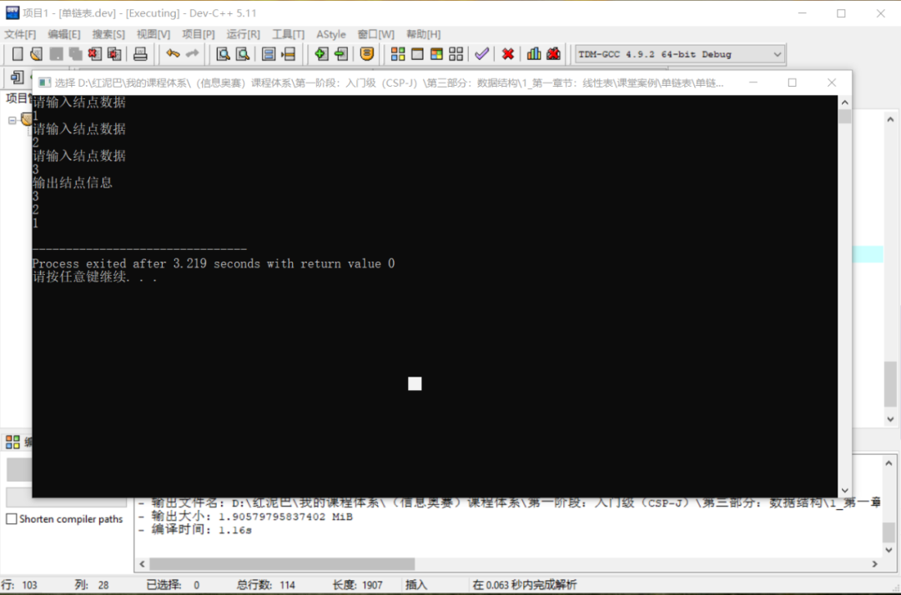
从结果可知，输入顺序和输出顺序是相反的。
- 尾部插入创建单链表，创建时的新结点替换原来的尾结点。如构建数据为
{4,9,12,7}的单链表。
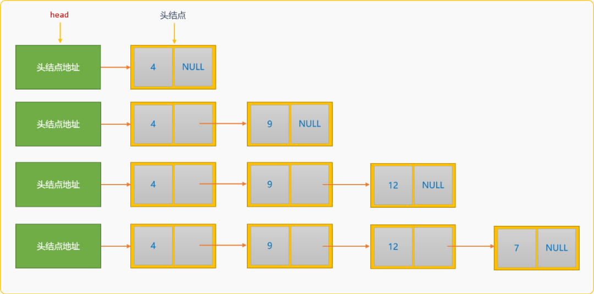
尾部插入方案创建的单链表，数据在链表中的存储顺序和数据的逻辑顺序是一致，从而也能保证最终读出来顺序和输入顺序是一致的。
与头部插入创建算法不同，除了需要存储头结点的地址信息，尾部插入算法中还需要一个tail变量存储尾结点的地址。初始时，tail和head指向同一个位置。
代码实现：
//从尾建链表
void createFromTail(int n) {
LinkNode *newNode,*p,*tail;
//头结点地址
p=this->head;
//尾结点地址
tail=this->head;
for(int i=0; i<n; i++) {
//构建一个新结点
newNode=new LinkNode(0);
cout<<"请输入结点数据"<<endl;
cin>>newNode->data;
if(p==NULL) {
//如果头结点为 NULL
p=tail=newNode;
} else {
//原来的尾结点成为新结点的前驱结点
tail->next=newNode;
//新结点成为新的尾结点
tail=newNode;
}
}
this->head=p;
}
测试尾部插入创建的正确性：
int main(){
LinkList list {};
list.createFromTail(3);
LinkNode * head= list.getHead();
cout<<"输出结点信息"<<endl;
//显示第一个结点
cout<<head->data<<endl;
//显示第二个结点
cout<<head->next->data<<endl;
//显示第三个结点
cout<<head->next->next->data<<endl;
}
执行后的结果：
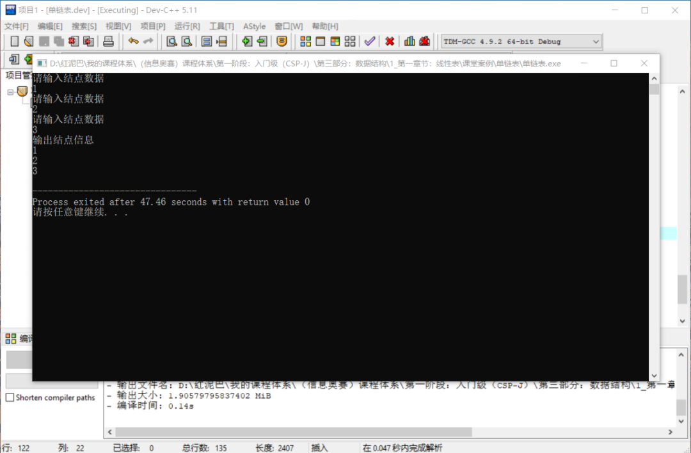
前文说过，初始化链表时，可以指定一个空白头结点作为链表的头结点。其意义在哪里？
可以在尾部创建插入算法中使用或不使用空白头结点了解一下代码的差异性 。上述尾部创建插入算法中，因链表是不带空白结点的，所以在创建新结点时，必须有如下一段代码：
因为刚开始时链表是空的，head和tail都是NULL，创建第一个新结点后，它即是头结点，也是尾结点，所以head和tail都需要指向此新结点。
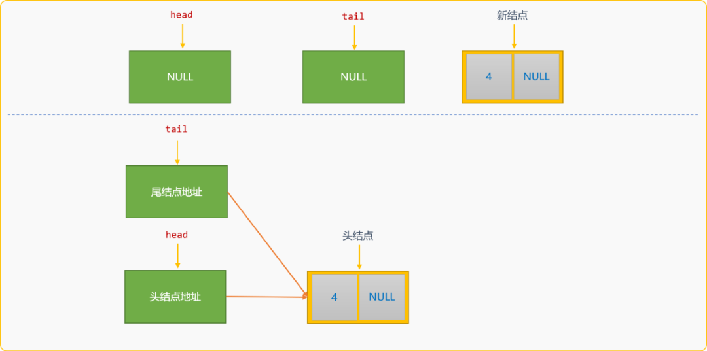
后续再创建新结点后，head则不需修改，通用逻辑是：原来的尾结点成为新结点的前驱结点，新创建的结点成为新的尾结点。
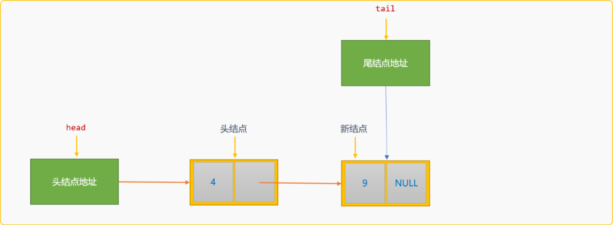
如果在初始化链表时，已经指定了一个空白结点，则尾部创建插入算法中只需遵循通用逻辑便可。
尾部创建插入算法可修改为：
void createFromTail_(int n) {
LinkNode *newNode,*p,*tail;
//头结点地址
p=this->head;
//尾结点地址
tail=p;
for(int i=0; i<n; i++) {
//构建一个新结点
newNode=new LinkNode(0);
cout<<"请输入结点数据"<<endl;
cin>>newNode->data;
//原来的尾结点成为新结点的前驱结点
tail->next=newNode;
//新结点成为新的尾结点
tail=newNode;
}
this->head=p;
}
初始链表时如果指定了空白头结点，就不需要考虑第一个结点的位置特殊性。
本文后续的算法都是基于带空白头结点的链表的操作。
2.3 查询链表
链表中的常用查询操作有 3 种方案：
- 按结点所在位置查找。
- 按结点的值查找。
- 查询链表中的所有结点。
2.3.1 按结点位置查找
设链表的头结点为编号为 0的结点，当给定编号 i 后，从头结点一至向后报数似的进行查找，至到找到与给定i值相同的结点 。
//按位置查询结点
LinkNode * findNodeByIndex(int index) {
int j=0;
LinkNode *p=this->head;
if(index==j)
//如果 index 值为 0 ，返回头结点
return p;
p=p->next;
while( p!=NULL && j<index) {
p=p->next;
j++;
}
if(j==index)return p;
else return NULL;
}
2.3.2 按结点的值查找
扫描链表中的每一个结点，比较那一个结点的值和给定的参数值相同。
//按值查询结点
LinkNode * findNodeByVal(dataType val) {
//如果不带空白结点，则从头结点开始查找
LinkeNode *p=this->head;
whil(p!=null && p->data!=val ) {
p=p->next;
}
if(p!=NULL) {
return p;
} else {
return NULL;
}
}
如果链表带有空白头结点，可以从头结点的后驱结点开始查找。
因为是按值比较，所以，无论链表是否带有空白头结点，都可以从头结点开始进行查找，对结果没有影响。
2.3.3 查询所有
不带空白头结点遍历操作：
//显示所有
void showSelf() {
if(this->head==NULL)return;
LinkNode *p=this->head;
while(p!=NULL) {
cout<<p->data<<"\t";
p=p->next;
}
}
带空白头结点的遍历：
//显示所有
void showSelf() {
if(this->head==NULL)return;
LinkNode *p=this->head->next;
while(p!=NULL) {
cout<<p->data<<"\t";
p=p->next;
}
}
2.4 插入
链表创建好后，后续维护过程，难免时时需要插入新的结点。插入时可以如前文在创建链表时一样，在头部插入和尾部插入。这里的插入指在链表的某个中间位置插入新结点。
- 后插入。
- 前插入。
2.4.1 后插入
所谓后插入，指新结点插入到某个已知结点的后面。如下图所示：
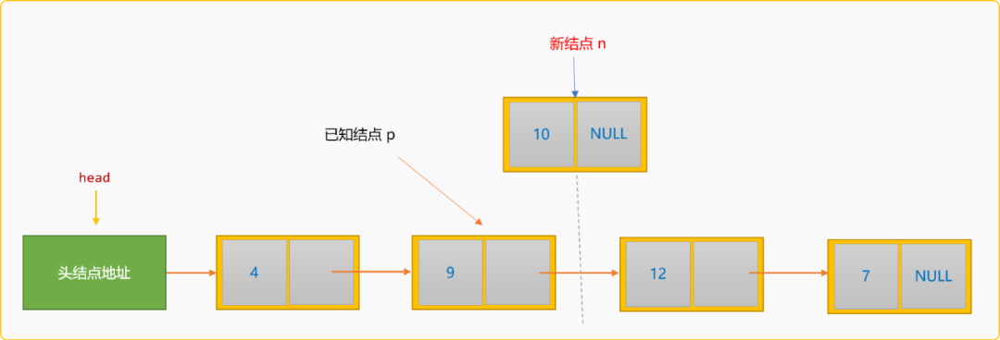
如果把值为 10 的新结点插入到值为 9的结点之后，称为后插入。后插入的通用逻辑：
-
查找到值为
9的结点地址，称为p结点。 -
创建新结点。
-
指定新结点
n的后驱结点为p的后驱结点。
n->next=p->next;
```
- 
- 指定`p`的后驱结点为新结点`n`。
```cpp
p->next=n;
```
- 
代码实现：
```cpp
//后插入
int instertAfter(dataType val,dataType data) {
//按值查找到结点
LinkNode *p=this->findNodeByVal(val);
if (p==NULL){
return false;
}
LinkNode *n=new LinkNode(0);
n->data=data;
n->next=p->next;
p->next=n;
return true;
}
测试后插入操作：
int main(int argc, char** argv) {
LinkList list {};
//创建值为 1 ，2 ，3 的 3 个结点
list.createFromTail(3);
//在值为 2 的结点后面插入一个值为5 的新结点
list.instertAfter(2,5);
//在链表中查看是否存在值为 5 的结点
list.showSelf();
return 0;
}
执行后输出结果：
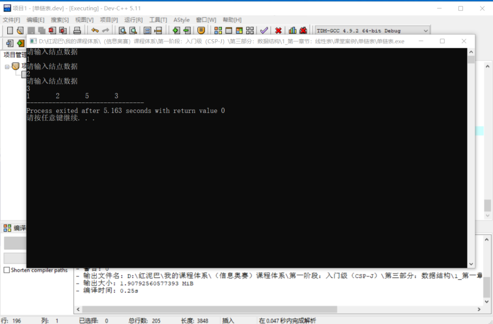
2.4.2 前插入
所谓前插入，指新结点插入到某个已知结点的前面。如下图所示：
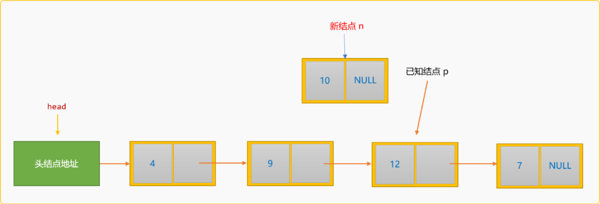
如果把新结点n插入到已知结点p的前面，则称为前插入。前插入的通用逻辑：
- 除了要查找到
p结点在链表中的地址，还需要知道p结点的前驱结点p1的地址。
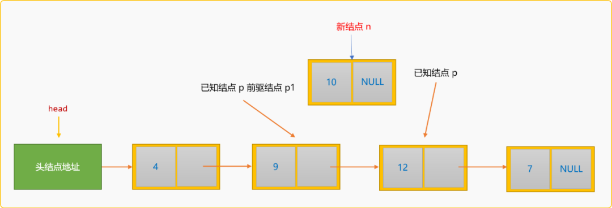
- 创建新结点，然后指定新结点
n的后驱结点为p结点。
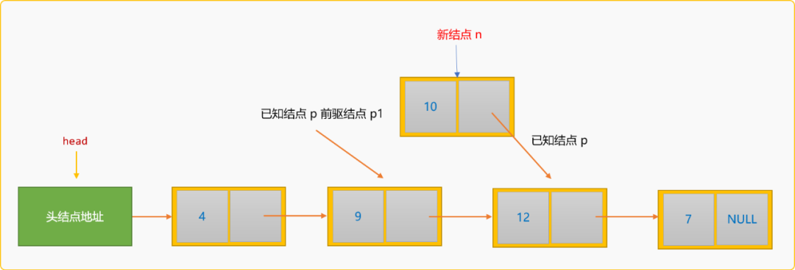
- 指定结点
p1的后驱结点为新结点n。
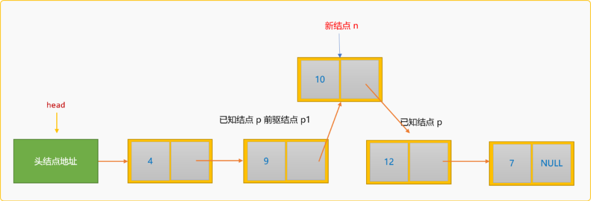
代码实现：
/前插入
int insertBefore(dataType val,dataType data) {
//按值查找到结点
LinkNode *p=this->findNodeByVal(val);
//查找前驱结点
LinkNode *p1=this->head;
while(p1->next!=p){
p1=p1->next;
}
//构建新结点
LinkNode *n=new LinkeNode(0);
n->data=data;
//新结的点的后驱为 p 结点
n->next=p;
//重设 p1 的后驱为 n
p1->next=n;
}
测试前插入操作：
int main(int argc, char** argv) {
LinkList list {};
//创建值为 1 ，2 ，3 的 3 个结点
list.createFromTail(3);
//在值为 2 的结点前面插入一个值为5 的新结点
list.insertBefore(2,5);
//在链表中查看是否存在值为 5 的结点
list.showSelf();
return 0;
}
执行后输出结果：
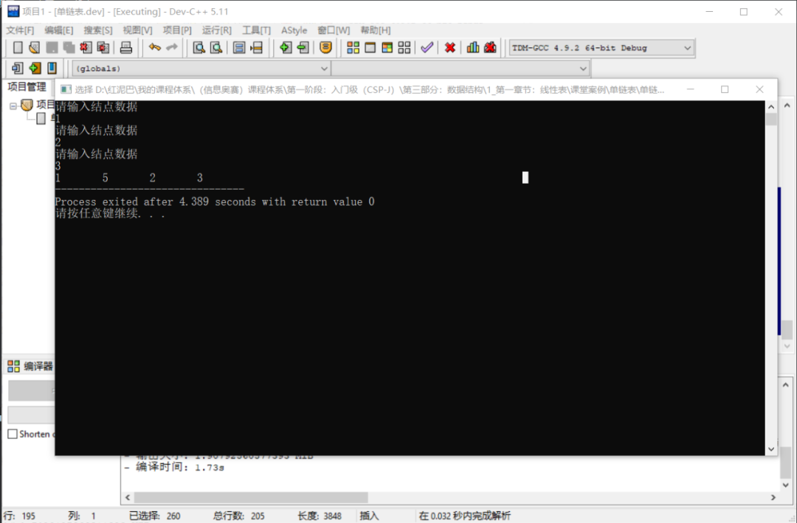
如果仅仅是关心数据在链表中的逻辑关系，则可以先把新结点n插入到结点p的后面，然后交换 2 个结点中的数据。
2.5 删除
删除算法包括：
- 删除某一个结点。
- 删除所有结点，也称为清空链表。
2.5.2 删除结点
删除结点的基本思路：
- 在链表中查找到要删除的结点
p。
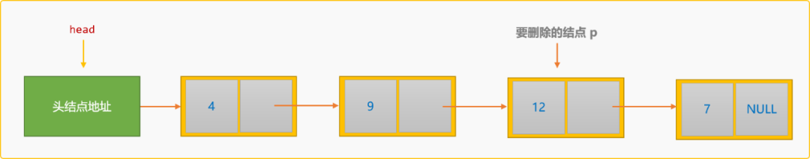
- 找到
p结点的前驱结点p1。
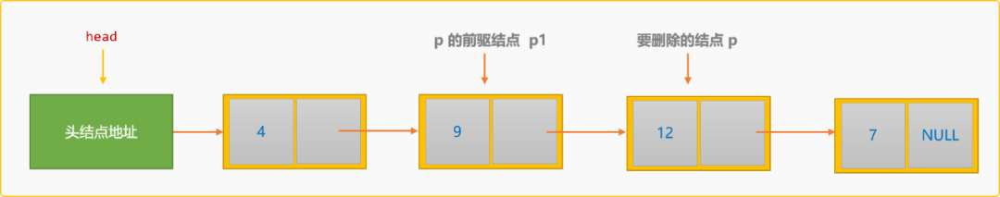
- 指定
p1的后驱结点为p的后驱结点。
p1->next=p->next;
```

编码实现：
```cpp
//按值删除结点
int delNode(dataType data) {
//按值查找到要删除的结点
LinkNode *p= this->findNodeByVal(data);
if (p==NULL)return false;
//查找前驱结点
LinkNode *p1=this->head;
while(p1->next!=p)p1=p1->next;
//删除操作
p1->next=p->next;
p->next=NULL;
delete p;
return true;
}
测试删除操作：
int main(int argc, char** argv) {
LinkList list {};
//创建值为 1 ，2 ，3 的 3 个结点
list.createFromTail(3);
//删除值为 2 的结点
list.delNode(2);
list.showSelf();
return 0;
}
输出结果：
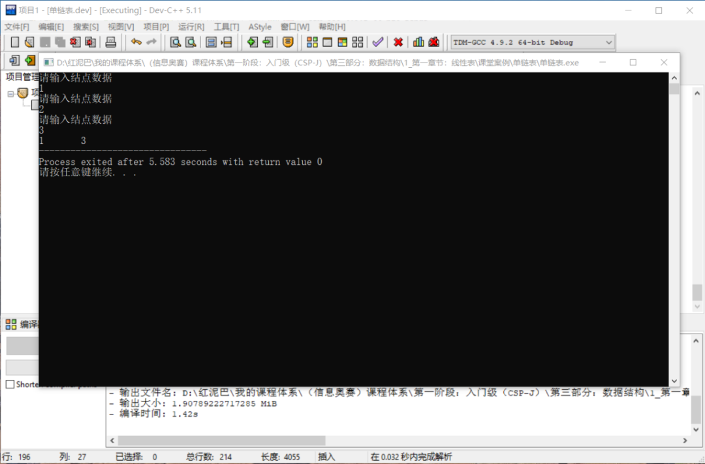
2.5.2 清空链表
清空链表指删除所有结点。从头结点开始扫描，找到一个删除一个，真到没有结点为止。
void delAll() {
LinkNode *p=this->head;
//临时结点
LinkNode *p1;
while(p!=NULL) {
//保留删除结点的后驱结点
q=p->next;
delete p;
p=q;
}
this->head=NULL;
}
测试：
int main(int argc, char** argv) {
LinkList list {};
//创建值为 1 ，2 ，3 的 3 个结点
list.createFromTail(3);
//没删除之前
cout<<"清除之前:"<<endl;
list.showSelf();
//清除链表
list.delAll();
//显示
cout<<endl<<"清除之后："<<endl;
list.showSelf();
return 0;
}
输出结果：
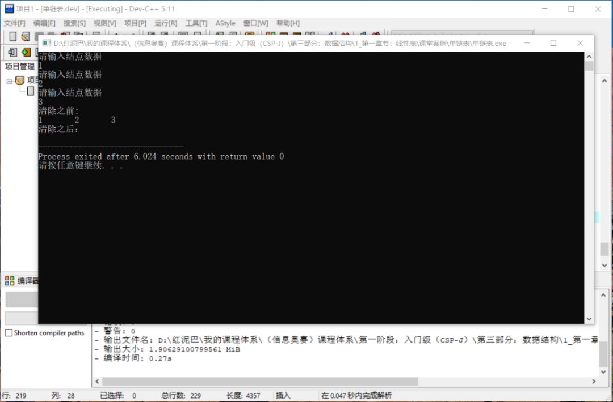
2.6 时间复杂度分析
在链表中查询的时间复杂为 O(n)。
在链表中进行插入操作时，先要查找到结点，如果不计查找时间，仅从插入算法本身而言，后插入算法时间复杂度为O(1)。因前插入算法需要要查找前驱结点，时间复杂度为O(n)。
删除结点时同样需要查找到被删除结点的前驱结点，时间复杂度为O(n)，如果是删除某个结点的后驱结点，时间复杂度为O(1)。
通过上述的基本操作得知：
- 单链表上插入、删除一个结点，需要知道其前驱结点的地址。
- 单链表不具有按序号随机访问的特点，只能从头结点开始依次查询。
3. 总结
本文主要讲解单链表的概念以及基于单链表的基本操作算法，除了单链表，还有循环链表、双向链表，将在后继博文中再详细讨论。无论链表的结构如何变化，单链表都是这种变化的始端。